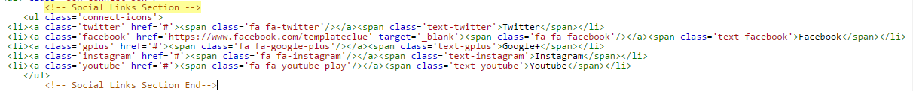
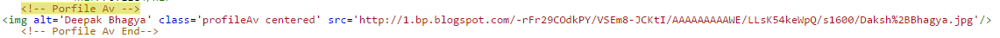
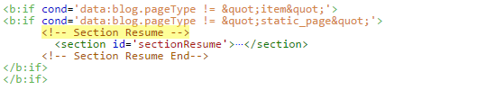
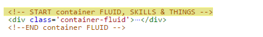
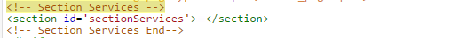
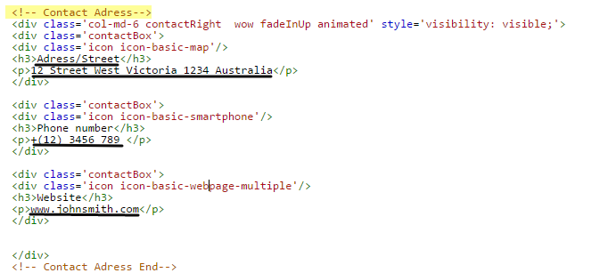

The Main Features Of INVENTIVE
- Nice and Clean Design
- Responsive Theme Layout
- Elegant look
- SEO Optimized
- Fast loading Theme
- Responsive Navigation Menu
- Page navigation Widget
Edit Navigation Section

Go to Blogger.com > Your Blog > Template > Edit HTML and find the following text:- <!-- Top Navigation -->

Top Social Icons
Go to Blogger.com > Your Blog > Template > Edit HTML and find the following text:- <!-- Social Links Section-->
<!-- Social Links Section--> <div class='social-links fr'> <a class='icon-fb' href='#'><i class='fa fa-facebook'/></a> <a class='icon-tw' href='#'><i class='fa fa-twitter'/></a> <a class='icon-gp' href='#'><i class='fa fa-google-plus'/></a> <a class='icon-in' href='#'><i class='fa fa-instagram'/></a> <a class='icon-rss' href='#'><i class='fa fa-rss'/></a> </div> <!-- Social Links Section End-->
Now change all of the links with your own.
Edit About Me
Go to Blogger.com > Your Blog > Template > Edit HTML and find the following text:- <!-- Section About -->
Change Avtar
Now change image link with your own.
Edit RESUME
Go to Blogger.com > Your Blog > Template > Edit HTML and find the following text:- <!-- Section Resume -->
Edit SKILLS
Go to Blogger.com > Your Blog > Template > Edit HTML and find the following text:- <!-- START container FLUID, SKILLS & THINGS -->
Change Icons
Get The Icons Code From Here https://linearicons.com/freeEdit SERVICES
Go to Blogger.com > Your Blog > Template > Edit HTML and find the following text:- <!-- Section Services -->
Edit CONTACT
Go to Blogger.com > Your Blog > Template > Edit HTML and find the following text:- <!-- Contact Adress -->
